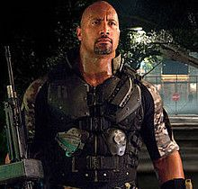

As some of you may know, I have been in the design industry for the past 10 years working as a freelance designer in various companies while also running this blog. In fact, the majority of my income is mostly from my design freelance work over at The Pete Design. I value well-designed products and today, I want to dive down into the design of travel blogs and featured the best design travel blogs out there that take storytelling to the next level and hopefully inspire you to create an awesome travel blog of your own.
The best travel blogs in the world offer amazing travel tips, photography, and video content. Top travel bloggers tend to be excellent writers and storytellers, offering helpful advice and inspiration to get travelers excited to explore new places.  I consider myself to be a great travel blogger, but there are so many others with unique perspectives and stories. While I’ve seen and experienced so much, I’m not an expert in all destinations and topic areas. For these reasons, I am super excited to share my favorite travel blogger websites around the world, ranging from
When you’re in a relationship life can seem so great. You’re in love, talking about the future and spending the days together cuddling up in bed. You can’t break up, they won’t become your ex. That’s when you take the next step, bringing up the idea to take a trip together months down the track. Which seems amazing at the time, things are better than they have ever been, and that won’t change, right?